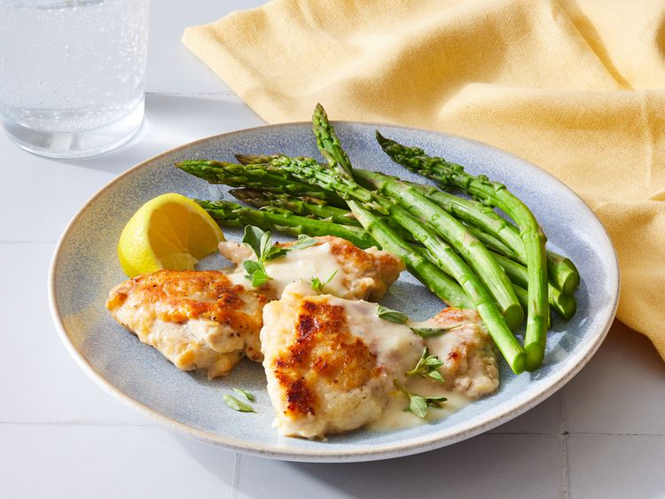

Creamy Lemon Parmesan Chicken

Description
Chicken breast is breaded with Parmesan and simmered in a delicious creamy lemon-cheese sauce.
Serve with rice or pasta and a side salad.
Ingredients
- Cheese
- Flour
- Chicken
- Seasonings
- Oil
- Garlic
- Broth
- Lemon
- Cornstarch
- Herbs
Steps
- Mix ¼ cup of the Parmesan with flour and season the chicken.
- Dredge each piece of chicken in the flour mixture.
- Brown the chicken on all sides, remove from the skillet, and cook the garlic in oil.
- Mix the broth, mascarpone, lemon zest and juice, and remaining Parmesan.
- Add the mixture to the skillet and bring to a boil.
- Make a cornstarch slurry and whisk into the broth mixture.
- Return the chicken to the skillet and cook until it’s no longer pink.
- Garnish with fresh oregano and serve with lemon wedges.